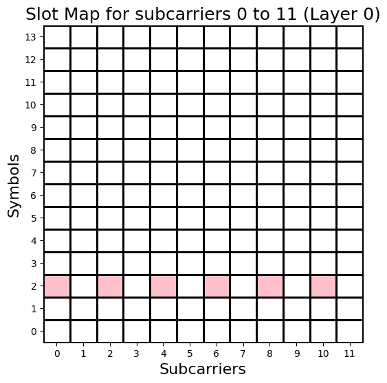
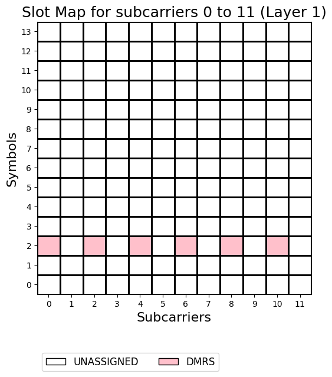
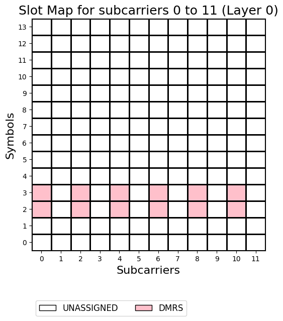
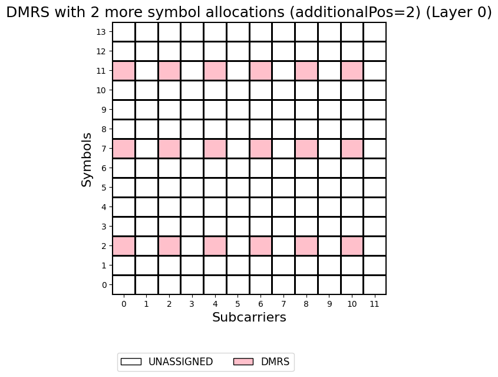
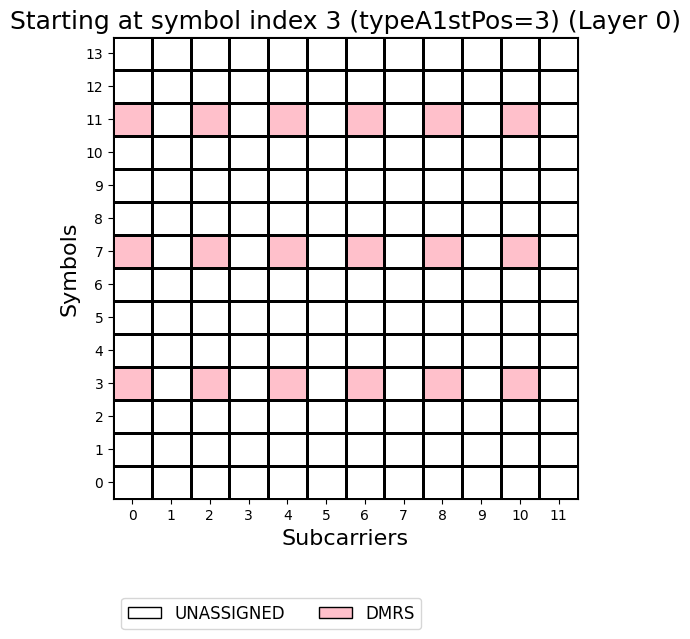
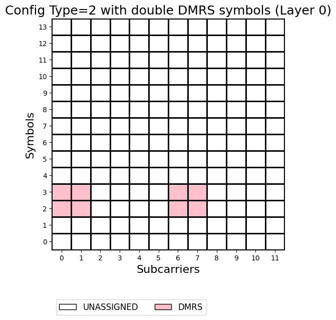
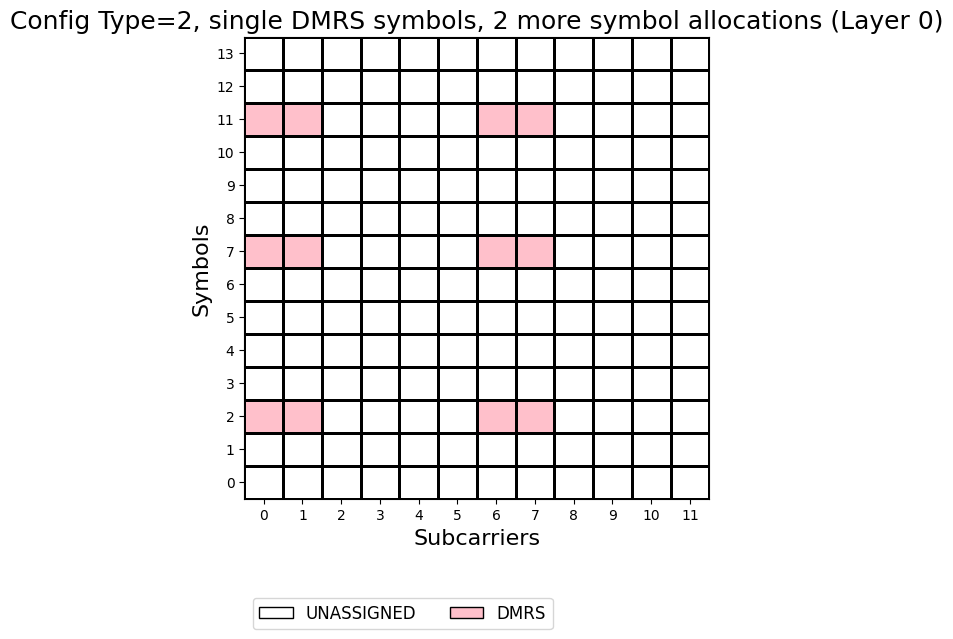
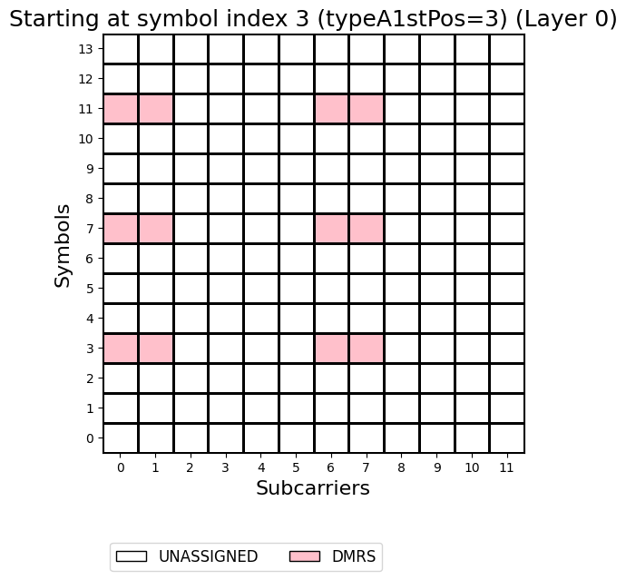
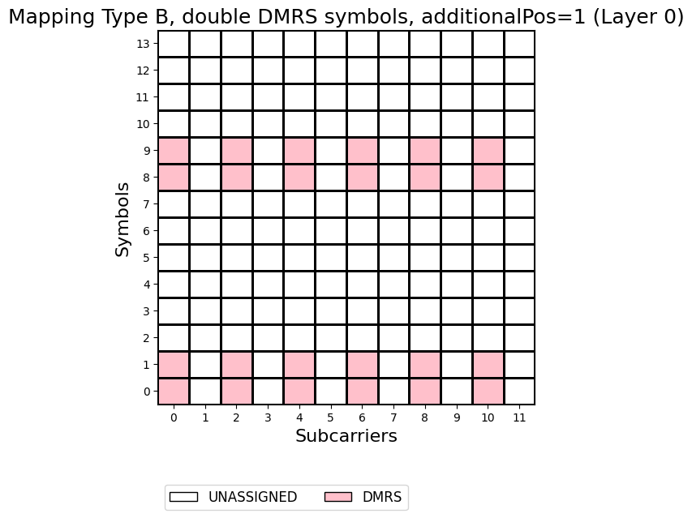
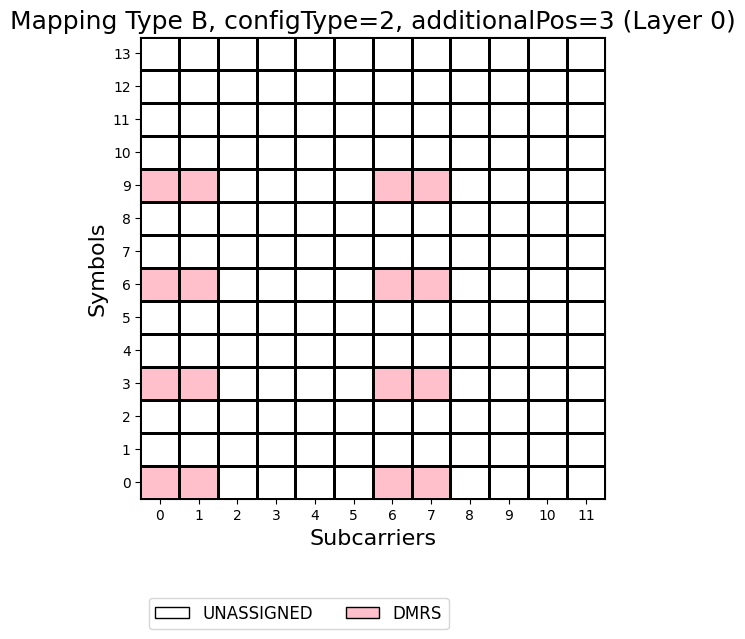

Configuring DMRS
This notebook shows different DMRS configurations
[1]:
import numpy as np
import scipy.io
from neoradium import Carrier, PDSCH, Grid
[2]:
carrier = Carrier(numRbs=5, spacing=30) # 5*12*30000 = 1,800,000 Hz
carrier.print()
Carrier Properties:
startRb: 0
numRbs: 5
Cell Id: 1
Active Bandwidth Part: 0
Bandwidth Parts: 1
Bandwidth Part 0:
Resource Blocks: 5 RBs starting at 0 (60 subcarriers)
Subcarrier Spacing: 30 KHz
CP Type: normal
bandwidth: 1800000 Hz
symbolsPerSlot: 14
slotsPerSubFrame: 2
nFFT: 128
[3]:
# Create a 2-layer PDSCH with Mapping Type A (default) using All Symbols and PRBs in the BWP (default)
pdsch = PDSCH(carrier.curBwp, numLayers=2)
pdsch.setDMRS() # Default DMRS settings
pdsch.print()
PDSCH Properties:
mappingType: A
nID: 1
rnti: 1
numLayers: 2
numCodewords: 1
modulation: 16QAM
portSet: [0, 1]
symSet: 0 1 2 3 4 5 6 7 8 9 10 11 12 13
prbSet: 0 1 2 3 4
interleavingBundleSize: 0
PRG Size: Wideband
Bandwidth Part:
Resource Blocks: 5 RBs starting at 0 (60 subcarriers)
Subcarrier Spacing: 30 KHz
CP Type: normal
bandwidth: 1800000 Hz
symbolsPerSlot: 14
slotsPerSubFrame: 2
nFFT: 128
DMRS:
configType: 1
nIDs: []
scID: 0
sameSeq: 1
symbols: Single
typeA1stPos: 2
additionalPos: 0
cdmGroups: [0, 0]
deltaShifts: [0, 0]
allCdmGroups: [0]
symSet: [2]
REs (before shift): [0, 2, 4, 6, 8, 10]
epreRatioDb: 0 (db)
[4]:
# Get a resourse grid from the PDSCH object. This creates a Grid object and populates it with the DMRS values
grid = pdsch.getGrid()
grid.getStats() # Print some statistics about the grid
[4]:
{'GridSize': 1680, 'UNASSIGNED': 1620, 'DMRS': 60}
[5]:
# Draw grid map for all layers, one slot and one PRB (reRange=(0,12))
grid.drawMap(pdsch.portSet, reRange=(0,12))


[6]:
# Lets see an example of DMRS with double symbol (symbols=2) - (Drawing only for one layer)
pdsch.setDMRS(symbols=2)
pdsch.getGrid().drawMap()

[7]:
# Using 2 additional symbol positions for DMRS (additionalPos=2)
pdsch.setDMRS(additionalPos=2) # Using setDMRS
pdsch.getGrid().drawMap(title="DMRS with 2 more symbol allocations (additionalPos=2)")

[8]:
# Same as above but starting at 3rd position (typeA1stPos=3)
# Note that this works only for PDSCH with Mapping Type A
pdsch.setDMRS(additionalPos=2, typeA1stPos=3)
pdsch.getGrid().drawMap(title="Starting at symbol index 3 (typeA1stPos=3)")

[9]:
# Now lets see an example of DMRS Config Type 2 and double DMRS symbols (symbols=2)
pdsch.setDMRS(configType=2, symbols=2)
pdsch.getGrid().drawMap(title="Config Type=2 with double DMRS symbols")

[10]:
# Using 2 additional symbol positions for DMRS (additionalPos=2)
pdsch.setDMRS(configType=2, additionalPos=2)
pdsch.getGrid().drawMap(title="Config Type=2, single DMRS symbols, 2 more symbol allocations")

[11]:
# Same as above but starting at 3rd position (typeA1stPos=3)
# Note that this works only for PDSCH with Mapping Type A
pdsch.setDMRS(configType=2, additionalPos=2, typeA1stPos=3)
pdsch.getGrid().drawMap(title="Starting at symbol index 3 (typeA1stPos=3)")

[12]:
# Now using a PDSCH with mapping type B (DMRS symbols are relative to PDSCH start symbol)
pdsch = PDSCH(carrier.curBwp, mappingType='B', numLayers=2)
# Default DMRS settings with 1 additional symbol positions, double symbols
pdsch.setDMRS(additionalPos=1, symbols=2)
pdsch.print()
pdsch.getGrid().drawMap(title="Mapping Type B, double DMRS symbols, additionalPos=1")
PDSCH Properties:
mappingType: B
nID: 1
rnti: 1
numLayers: 2
numCodewords: 1
modulation: 16QAM
portSet: [0, 1]
symSet: 0 1 2 3 4 5 6 7 8 9 10 11 12
prbSet: 0 1 2 3 4
interleavingBundleSize: 0
PRG Size: Wideband
Bandwidth Part:
Resource Blocks: 5 RBs starting at 0 (60 subcarriers)
Subcarrier Spacing: 30 KHz
CP Type: normal
bandwidth: 1800000 Hz
symbolsPerSlot: 14
slotsPerSubFrame: 2
nFFT: 128
DMRS:
configType: 1
nIDs: []
scID: 0
sameSeq: 1
symbols: Double
typeA1stPos: 2
additionalPos: 1
cdmGroups: [0, 0]
deltaShifts: [0, 0]
allCdmGroups: [0]
symSet: [0 1 8 9]
REs (before shift): [0, 2, 4, 6, 8, 10]
epreRatioDb: 0 (db)

[13]:
# Now using Config Type 2 (still with Mapping Type B)
pdsch.setDMRS(configType=2, additionalPos=3) # 3 additional symbol positions
pdsch.getGrid().drawMap(title="Mapping Type B, configType=2, additionalPos=3")

[ ]:
[ ]: